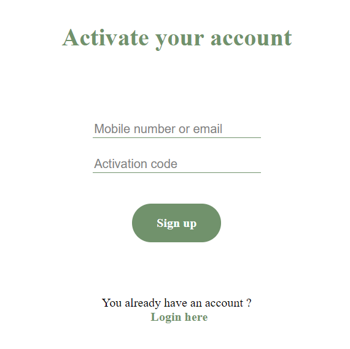

♦ Cuprins
- • Cerinta
- • Introducere
- • Structura
- • Pagini responsabile de gestionare a contului
- • Script-ul pentru fereastra de chat
- • API
♦ Cerinta
Scopul acstui document SRS este de a descrie functionalitatea esentiala a aplicatiei Realtime Support Chat si detalii privind aspectul si interactiunea cu utilizatorul.♦ Introducere
Realtime SupportChat este o aplicatie web ce ofera un script cu ajutorul caruia se poate introduce o fereastra de chat intr-un site. Conversatiile sunt salvate si afisate in meniul dedicat administratorului, unde acesta poate sa si downloadeze scriptul si sa customizeze designul ferestrei de chat.
Principale noastre obiective
• Incurajarea apelarii la suportul oferit de persoanele specializate in mediul online
• Crearea unei aplicații ușor de utilizat de către utilizatorul comun
deoarece majoritatea oamenilor consideră prea complicat sau ineficient procesul standard de
"customer support"
Referinte
Acest proiect are ca inspiratie platforma "Drift" .
♦ Structura
Am dezvoltat trei componente principale: paginile web front-end, serverul back-end pentru a ilustra
functionalitatea aplicatiei si un script JS ce creaza o fereastra de chat si care poate fi integrat
intr-un site web.
De asemenea, am folosit Node.js ca platforma pentru back-end.
Back-end
Paginile web sunt organizate in foldere separate, fiecare avand asset-urile necesare functionarii sale, astfel in momentul in care vom avea de facut modificari sau actualizari unei singure pagini, vom apela la modulul aferent ei. Ca limbaj de programare, folosim JavaScript impreuna cu Node.js pentru partea de server.Front-end
Fiecare pagina web imparte un design comun cu celelalte.Paginile au un design responsive, ce permite vizualizarea pe orice device. In continuare vom prezenta functionalitatea fiecarei pagini.
♦ Pagini responsabile de gestionarea contului
Dupa cumpararea unei licente pentru utilizarea acestei aplicatii, administratorul va primi pe mail un cod de activare a contului. In functie de licenta pe care o detine, va putea genera un anumit numar de coduri unice ce vor permite inregistrarea angajatilor in aplicatie. Astfel, aplicatia nu va putea fi utilizata decat dupa primirea codului unic de activare.Login
Pagina de login are un design simplu, foloseste un formular care primeste ca input doua campuri: Email / Numarul de telefon si parola. De asemenea, datele introduse de utilizator sunt verificate pentru respectarea structurii corespunzatoare pentru a il avertiza in cazul unei erori de scriere. De asemenea, pagina de login contine si doua linkuri, unul care redirectioneaza utilizatorul catre pagina de inregistrare si respectiv catre pagina de resetare a parolei.

Activate account
Pagina de activare a contului are un formular similar cu cel de la pagina de login. Dupa completarea cu date corecte a formularului si apasarea butonului "Sign up", utilizatorul este redirectionat catre pagina de setare a parolei. 
Set new password

Pagina aplicatiei de chat continua designul simplu de utilizat pentru utilizator. Pagina este compusa din 3 mari sectiuni: mesaje recente, fereastra actuala de chat si formularul destinat scrierii mesajelor.

♦ Script-ul pentru fereastra de chat
Scriptul este un JS incarcat intr-un site web si creaza o fereastra de chat de tip pop-up. Prin intermediul acestei ferestre de chat, utilizatorii pot comunica cu administratorii aplicatiei.♦ REST API
Administatorii aplicatiei vor avea de asemenea la dispozitie un REST API integrabil in propriile
sisteme
de tip CRM.
Prin intermediul API-ului, acestia vor putea sa configureze aspectul ferestrei de chat create de
catre
scriptul extern JS si vor putea seta mesaje automate.
Detalii